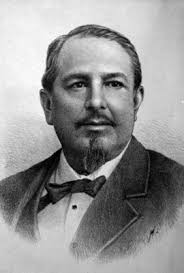
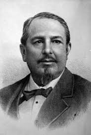

BATALLA DE PUEBLA


 2
2 3
3 5
5 7
7 8
8 9
9 10
10BATALLA DE PUEBLA
"Cuando una batalla está perdida, sólo los que han huido pueden combatir en otra." -Demóstenes.

"Cuando una batalla está perdida, sólo los que han huido pueden combatir en otra." -Demóstenes.
La Batalla de Atlixco tuvo lugar el 4 de mayo de 1862 en las inmediaciones de la Hacienda de las Traperas en Atlixco en el estado de Puebla, México, entre elementos del ejército mexicano de la república, al mando de los generales Antonio Carvajal y Tomás O'Horan contra las tropas al servicio del Segundo Imperio Mexicano comandadas por el general José María Cobos y de Leonardo Márquez, compuesta de soldados conservadores mexicanos en apoyo de envío de refuerzos para llevar a cabo la Batalla de Puebla, durante la Segunda Intervención Francesa en México
La batalla de Puebla fue un combate librado el 5 de mayo de 1862 en las cercanías de la ciudad de Puebla, entre los ejércitos de la República Mexicana, bajo el mando de Ignacio Zaragoza, y del Segundo Imperio Francés, dirigido por Charles Ferdinand Latrille, conde de Lorencez, durante la Segunda Intervención Francesa en México, cuyo resultado fue una victoria importante para los mexicanos ya que con unas fuerzas consideradas como inferiores lograron vencer a uno de los ejércitos más experimentados y respetados de su época. Pese a su éxito, la batalla no impidió la invasión del país, aunque sí que sería la primera batalla de una guerra que finalmente México ganaría. Los franceses regresarían al siguiente año, con lo que se libró una segunda batalla en Puebla en la que se enfrentaron 35 000 franceses contra 29 000 mexicanos (defensa que duró 62 días) y lograrían avanzar hasta la Ciudad de México, lo que permitió establecer el Segundo Imperio Mexicano.

En octubre de 1861, Francia, Inglaterra y España suscribieron la Convención de Londres, en la cual se comprometieron a enviar contingentes militares a México ya que este tenía una gran deuda de 80 millones de pesos, aproximadamente eran 69 millones para los ingleses, 9 millones para los españoles y 2 millones para Francia. La alianza tripartita amenazó al presidente Benito Juarez con una invasión inminente si no se saldaba por completo las deudas que México tenía con los tres países europeos.
Juarez responde con un exhorto para lograr un arreglo amistoso, y los invitó a conferenciar. Sin embargo, sabía que había una guerra inminente y trató de proteger la Ciudad de México trasladando pertrechos y ordenó la fortificación de Puebla. Creo al Ejército de Oriente y el hombre que se designó en el mando fue el general Ignacio Zaragoza. En un principio la Alianza Tripartita aceptó el llamado al diálogo de Benito Juarez y sus representantes se reunieron con Manuel Doblado, ministro de Relaciones Exteriores del gobierno mexicano, quien consiguió que Juan Prim, representante español, y Lord John Russell por Inglaterra se retiraran. A este acuerdo se le conoce como los Tratados Preliminares de la Soledad.
El 5 de marzo, cuando aún se realizaban las negociaciones de los Tratados de la Soledad, llegó a Veracruz un contingente militar francés bajo el mando de Charles Ferdinand Latrille, conde de Lorencez. A finales de abril, Lorencez desconoció los Tratados de Soledad y se puso en marcha, junto con sus efectivos, hacia Puebla, con el fin último de conquistar la Ciudad de México.

Famoso militar mexicano quen cuando las fuerzas francesas de Napoleón III invadieron México para imponer como emperador a Maximiliano de Habsburgo, con el rango de general y al mando del Ejército de Oriente, las enfrentó en Acultzingo en la llamada Batalla de Las Cumbres de Acultzingo, el 28 de abril de 1862, siendo obligado a retroceder. Zaragoza comprendió la posición defensiva y favorable que tenía la ciudad de Puebla, paso obligado para ir a la Ciudad de México, y con un ejército más pequeño y menos equipado que los franceses, logró dar una batalla excepcional desde los cerros de Loreto y Guadalupe el 5 de mayo de 1862, en la que el ejército francés fue completamente derrotado, viéndose obligado a retirarse hasta la ciudad de Orizaba, en el estado de Veracruz.


Al producirse la Intervención Norteamericana en México, en el seminario de Oaxaca surgió la inquietud de luchar contra los invasores, idea que fue respaldada y alentada por los sacerdotes y maestros. En octubre de ese año, varios alumnos se dirigieron a ver al gobernador del Estado y solicitarle su ingreso al ejército nacional. Porfirio Díaz estaba en ese grupo, y los cadetes fueron asignados al Batallón de San Clemente. Sin embargo, poco después, la guerra terminó y los estudiantes no pudieron ir a pelear.En apoyo del Guerrero, que se dejó ir demasiado lejos en persecución, Díaz envió a las tropas de Oaxaca, con los Coroneles Espinoza y Loaeza a la cabeza, dando un impulso formidable a los mexicanos, que expulsaron al enemigo de las cercanías. El éxito alentó a Porfirio, destacó al Morelos con dos piezas de artillería a la izquierda, mientras por la derecha los Rifleros de San Luis se reponían de la escaramuza, antecedidos por una formidable Carga de Lanceros, dirigida por el mismísimo Díaz, que desbarata las filas del enemigo; Díaz quedó dueño del campo y necesitó repetidas órdenes de Zaragoza para regresar a sus posiciones


Felipe Berriozábal Militar e ingeniero, nació en Zacatecas. Fue gobernador de los estados de México, Michoacán y San Luis Potosí y realizó importantes proyectos de ingeniería. Como militar llegó a General y fue ministro de Guerra y Marina. Participó en la Guerra de Reforma y contra la Intervención Francesa. En la batalla del 5 de mayo en Puebla, aseguró el triunfo de los mexicanos al dar alcance con la caballería, junto con el Gral. Porfirio Díaz, a las tropas francesas en retiradas.Actuó bajo las órdenes del general Ignacio Zaragoza al confrontar y derrotar a Leonardo Márquez en las Lomas de Calderón, pero fue hecho prisionero por Miguel Miramón en diciembre de 1860. En 1862, participó en la defensa del Convento San Agustín, en la Batalla de Las Cumbres, y en la Batalla de Puebla. En 1863, fue hecho prisionero por los franceses, logró fugarse uniéndose al presidente Benito Juárez, quien lo designó en 1865 como Ministro de la Guerra

Tuvo lugar después de que el gobierno mexicano, encabezado por Benito Juárez, anunciara la suspensión de los pagos de la deuda externa en 1861. Como respuesta, Francia, Reino Unido y España formaron una alianza por la Convención de Londres y anunciaron su intención de enviar tropas a México. El gobierno de ese país derogó la Ley de Suspensión de Pagos, pero la alianza no eliminó su plan. Las tropas de la alianza llegaron a Veracruz en 1862 y entraron en negociaciones con el gobierno de México.


Durante la Segunda Intervención Francesa en México, Negrete hizo a un lado su ideología conservadora y participó en la defensa del territorio mexicano, ante el avance de las tropas francesas hacia el centro de México, Negrete reacciona y se pone de parte del bando liberal con su célebre frase "Yo tengo Patria antes que Partido".Unido al ejército republicano y a las órdenes del general Ignacio Zaragoza, ambos se cubren de gloria en la Batalla de Las Cumbres y en la Batalla de Puebla el 5 de mayo de 1862, llegando a ser considerado como el segundo héroe de dicha batalla al defender el Fuerte de Loreto.
 


Una de las más grandes batallas que ha librado el país tuvo lugar en la ciudad de Puebla, la batalla del 5 de mayo de 1862. En la zona de los fuertes, en el mismo escenario del pasado, se ubica el museo interactivo. El recorrido por el museo utiliza la tecnología más puntera para narrar las acciones militares y la biografía de héroes nacionales como Negrete, Díaz y Zaragoza. Pantallas táctiles, proyecciones en 3-D y contenidos interactivos descargables en dispositivos ofrecen una experiencia única al visitante.


Espacio interactivo donde las familias puedan conocer de manera divertida los pasajes de los hechos desarrollados en la zona de Los Fuertes.
Cañones utilizados durante la Batalla de Puebla